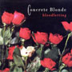

Not much personal information is known about the various members of the band Concrete Blonde.
The most well-known member is Johnette Napolitano. She is of Italian-American heritage and, even from a young age, was involved in the art scene in southern California. She was able to attend UCLA, where she studied sculpture and poetry. She was always interested and involved with the LA punk scene - she was working at the legendary Gold Star Studios until she formed the duo Dream 6 (with Jim Mankey). The pair recorded a self-titled 1982 EP produced by Jim's brother Earle Mankey (like Jim, a former member of the first lineup of Sparks, and at the time one of the hottest producers on the L.A. new wave scene), which attracted the attention of IRS Records boss Miles Copeland. With a new drummer in Chicago transplant Harry Rushakoff and a new name supposedly bestowed by R.E.M.'s Michael Stipe that was supposed to connote the band's mix of hard and soft elements, Concrete Blonde released their self-titled debut in 1987. This was quickly followed by Free, Bloodletting (featuring the group's biggest hit, "Joey"), Walking in London, and Mexican Moon, before Concrete Blonde split in 1995.
Napolitano then moved on to two short-lived projects, Vowel Movement (a collaboration with Holly Beth Vincent of Holly & the Italians) and Pretty & Twisted (with the late Marc Moreland, formerly of Wall of Voodoo), as well as occasional Concrete Blonde reunion albums. Following this, Napolitano began a second career as soundtrack composer for small and medium-budget indie films. She has contributed music to many films, some more notable projected included Wicker Park and Underworld. She also released a pair of largely improvised and mostly electronic albums, Sketchbook and Sketchbook 2, in 2002 and 2006. Johnette Napolitano's first proper solo album, Scarred, followed in the spring of 2007.
"Bloodletting" (1990) remains Concrete Blonde's most commerically successful album.
The success of the album was specifically fueled by the hit song "Joey" which in turn inspired Sugarland's 2009 single of the same name.
Their other most well-known songs are the title song "Bloodletting" and "Tomorrow Wendy". (These songs and others by the band have been sampled by shows such as "Buffy the Vampire Slayer" and "The Shield".)